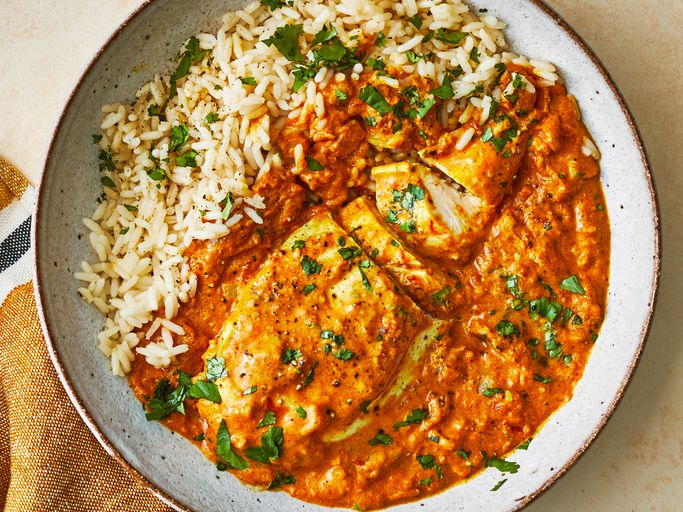

Oven Baked Chicken Teriyaki

This is a really good recipe for spicy Indian chicken curry. It's pretty easy to make and tastes better than takeout!
Ingredients
- 8 pounds skinless, boneless chicken breast halves
- 8 teaspoons salt
- 2 cups cooking oil
- 6 cups chopped onion
- 4 tablespoons minced garlic
- 2 tablespoons minced fresh ginger root
- 4 tablespoons curry powder
- 4 teaspoons ground cumin
- 4 teaspoons ground turmeric
- 4 teaspoons ground coriander
- 4 teaspoons cayenne pepper
- 4 tablespoons water
- 4 (15 ounce) can crushed tomatoes
- 4 cups plain yogurt
- 4 tablespoons chopped fresh cilantro
- 4 teaspoons salt
- 2 cups water
- 4 teaspoons garam masala
- 4 tablespoons chopped fresh cilantro
- 4 tablespoons fresh lemon juice
Steps
- Sprinkle the chicken breasts with 2 teaspoons salt. Heat oil in a large skillet over high heat; partially cook the chicken in the hot oil in
batches until completely browned on all sides. Transfer browned chicken breasts to a plate and set aside.
- Reduce the heat to medium and add onion, garlic, and ginger to the oil remaining in the skillet. Cook and stir until onion turns soft and translucent,
5 to 8 minutes. Stir curry powder, cumin, turmeric, coriander, cayenne, and 1 tablespoon of water into the onion mixture;
allow to heat together for about 1 minute while stirring.
- Add tomatoes, yogurt, 1 tablespoon chopped cilantro, and 1 teaspoon salt to the mixture; stir to combine.
- Return chicken breast to the skillet along with any juices on the plate. Pour in 1/2 cup water and bring to a boil,
turning the chicken to coat with the sauce. Sprinkle garam masala and 1 tablespoon cilantro over the chicken.
- Cover the skillet and simmer until chicken breasts are no longer pink in the center and the juices run clear, about 20 minutes.
An instant-read thermometer inserted into the center should read at least 165 degrees F (74 degrees C). Drizzle with lemon juice to serve.
Home